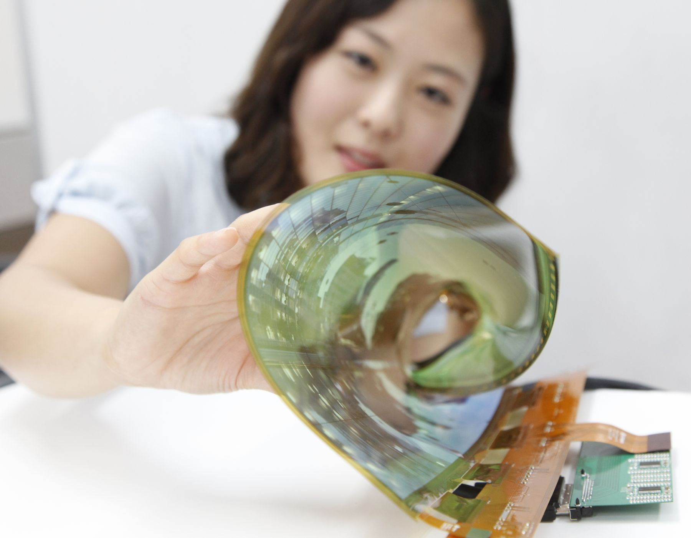
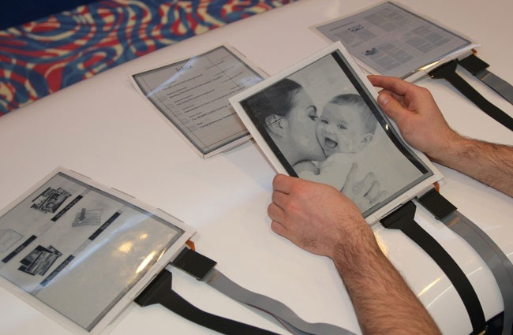
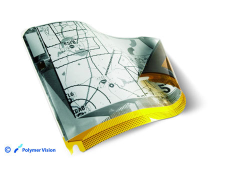
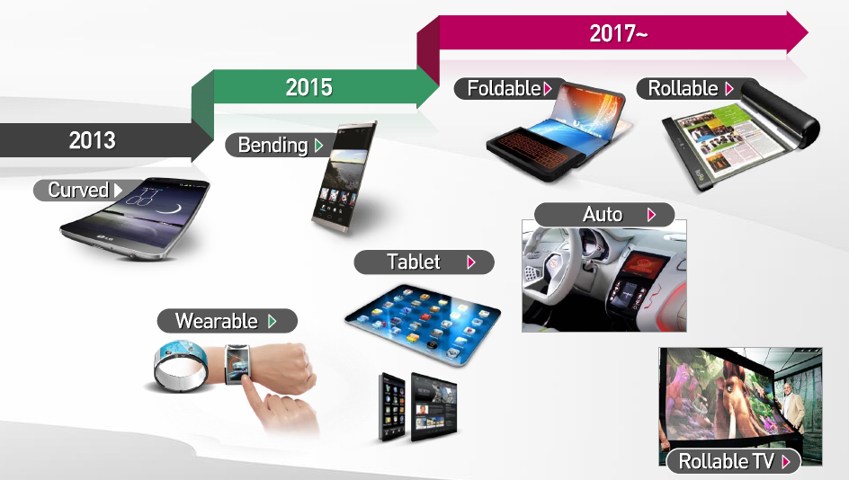
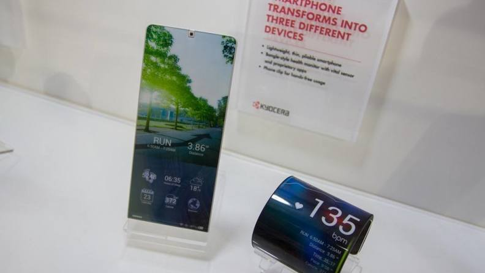
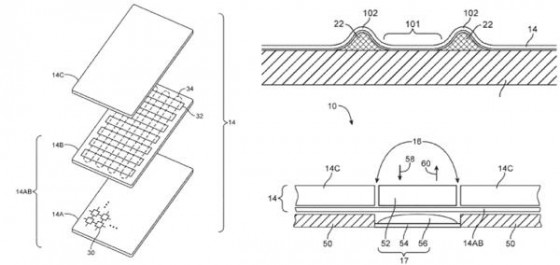

Veille Technologique
Les écrans flexibles
Démarche de veille

Définition du produit :
Un écran flexible est un écran électronique qui peut se courber ou se plier en plein fonctionnement sans aucun problème suite à cette action tout en gardant et en reprenant leur structure et forme d’origine. Le principe d’écran flexible est un projet qui se développe et se concrétise au sein de plusieurs grande entreprises du secteur high-tech sur des produits comme les Smartphones les télévisions, les tablettes …
Histoire :
La 1ère pierre est posée à l’automne 2000 quand des scientifiques du laboratoire de recherche Philips aux Pays-Bas ont réalisé un écran de la taille d’un timbre poste fabriqué avec des matières plastiques, ce premier prototype est rigide car :
"Avant de réaliser un écran réellement souple, les chercheurs néerlandais ont tenu à tester la façon dont des pixels pouvaient être commandés par des transistors à base de polymères",
annonce le docteur Maria Vincken, porte-parole de la société Philips. Ce projet ouvre les portes de la maniabilité des polymères.
Définition
Gyricon
Le Gyricon est composé de petites sphères de polyethylène (~100 micromètres) intégrées dans une feuille de silicone transparente. Chaque sphère est en suspension dans une bulle d’huile afin de pouvoir tourner librement, elles sont composée d’un côté de plastique noir chargé négativement, et de l’autre côté de plastique blanc chargé positivement. La polarité du voltage appliqué à chaque paire d’électrode détermine ensuite si le côté blanc ou noir est face vers le haut, donnant ainsi une apparence blanche ou noir à chaque pixel.

Electrophorétique
L’affichage électrophorétique est rendu possible grâce à des petites particules de dioxyde de titane (~1 micromètre), dispersée dans une huile d’hydrocarbure. Un colorant sombre est également ajouté à l’huile, ainsi que des tensioactifs et des agents de charge qui impose une charge électrique aux particules. Ce mélange est placé entre deux plaques conductrices parallèles. Quand une tension électrique est appliquée à travers les deux plaques, les particules migrent vers la plaque portant la charge opposée à celle des particules. Lorsque les particules sont situées du côté de la face avant de l’écran (côté visuel), celui-ci apparait blanc parce que les particules réfléchissent la lumière. Lorsque les particules sont situées du côté de la face arrière (côté invisible à l’utilisateur), l’écran apparaît sombre, car la lumière est absorbée par le colorant noir. Une image peut être formée en divisant l’électrode arrière en petites zones (pixels), et en appliquant la tension correspondante à chaque zone.

Electrowetting
L’affichage (EWD) est basé sur le contrôle d’une interface confinée eau/huile par une tension électrique. Lorsque l’interface est hors tension, l’huile colorée forme un film plat entre l’eau et une surface hydrophobe (qui repousse l’eau) et isolante, qui recouvre une électrode, résultant en un pixel coloré. Quand une tension est appliquée entre l’électrode et l’eau, la tension à l’interface entre l’eau et le revêtement hydrophobe change: l’état empilé n’est plus stable, et l’eau pousse l’huile sur le côté. Il en résulte un pixel transparent.
Les informations récoltées lors de nos recherches peuvent être classé en 3 catégories :
Les concepts : Une idée dont les artistes et designers ont déjà tenté d’imaginer le design et les applications, mais qui n’existe pas encore physiquement
Les prototypes : une conception de l’appareil en développement, il existe déjà physiquement mais n’est pas disponible sur le marché pour les clients
Les produits finis : un appareil qui existe sur le marché et qui est déjà disponible pour des clients
En 2004, Polymer Vision l’une des filiales de Philips fabrique un prototype d’écran souple.
Cette écran souple peut reproduire une image monochrome (niveaux de gris), composée de 80 000 pixels et sur 5 pouces de diagonale (environ 12 centimètres).Ses propriétés lui permettent d’être enroulé sous la forme d’un tube de 2 centimètres de diamètre. Avec une fréquence de rafraîchissement de 1 seconde, aucune image animée ne peut encore y être visualisée.
Caractéristiques techniques
écran TFT LCD QVGA (320×240 pixels)
résolution de 85 dpi
épaisseur de 3 feuilles de papier (25 microns)
matrice active contentant 76 800 transistors organiques en couche mince combinés à un panneau avant électrophorétique (encre électronique développé par la société E Ink).
poids : 3,5 grammes.
10 juillet 2014
LG dévoile un écran flexible OLED
LG bouscule les performances obtenues jusqu’alors avec un écran de 18 pouces flexible, pouvant s’enrouler
L’écran flexible affiche une résolution de 1200 par 810, l’écran peut être enroulé en un tube de 3 centimètres de rayon, sans affecter les performances, mais LG vise plus haut, avec des écran ultra HD de 60 pouces pour 2017.
3 Novembre 2014
Prototype de smartphone qui ce transforme en tablette par SEL*
Présenté au salon Display Innovation 2014 à Yokohama, l’écran de 8,7 pouces est pensé pour être plié 100 000 fois sans que l’affichage n’en soit perturbé et dispose d’un écran tactile de 100 microns d’épaisseur. Une fois plié, l’affichage dispose également d’un angle permettant d’afficher des notifications sur son bord arrondi, à l’image de celui retrouvé sur le Galaxy Note Edge de Samsung.
SEL* : Semiconductor Energy Laboratory, entreprise japonaise de recherche et développement dans les nouvelles technologies.
10 Novembre 2014
LG Promet des écrans pliables dès 2015 et des écrans enroulable pour 2017 voici la feuille de route que LG Display à publier :

17 Novembre 2014
Kyocera Proteus : le concept hybride entre Smartphones et bracelet
Un téléphone qui peut s’enrouler autour du bras, concept du groupe japonais Kyocera.
20 Novembre 2014
Samsung : un appareil à écran pliable en 2015
Samsung prévoit de lancer en 2015 un produit à écran pliable. C’est ce que rapportent nos confrères sud-coréens de ZDNet qui ont eu cette information de la bouche même de Lee Chang-Hoon, en charge de la stratégie pour les écrans Samsung.
La cadence s’accélèrera en 2016. Dès lors, un appareil pliable sera commercialisé pour appuyer cette technologie. Néanmoins, Lee Chang-Hoon se garde bien de préciser s’il s’agira d’un smartphone, d’une tablette ou tout simplement d’une nouvelle montre Galaxy.
Jusqu’à maintenant on n’avait droit qu’à des appareils à écran flexibles. Ainsi, ils sont recourbés en usine comme c’est le cas pour le Galaxy Note Edge ou le LG G Flex. Les téléviseurs vont plus loin. On pense ainsi à LG et Samsung qui ont chacun un modèle avec dalle robotisée capable de se plier en fonction des envies de l’utilisateur. C’est en ce sens que sont développés les concepts d’écrans pliables actuels, comme le Kyocera Proteus (info ci-dessus) présenté lors du Ceatec 2014.
11 Décembre 2014
Apple dépose un brevet pour un écran souple à retour haptique
Le californien a déposé un brevet qui décrit un écran souple capable de se déformer sous la pression mais aussi de créer de lui-même à sa surface des formes simples comme des boutons ou des croix directionnelles, ce grâce à des actuateurs placés sous la dalle. L’écran serait en outre capable de laisser passer le son de hauts parleurs situés eux aussi sous la fine couche de pixels.
Le concept n’est pas si irréalisable que cela puisqu’il est basé sur la technologie Force Touch utilisée dans l’Apple Watch, et qu’Apple décrit lui-même comme « de petits électrodes placés autour d’un écran flexible Retina permettant de distinguer entre un toucher léger et une pression soutenue« . Le brevet rajoute au Force Touch des petits moteurs, vibrateurs ou actuateurs piézo-électriques qui doivent donner à l’utilisateur l’illusion qu’il touche bien une forme particulière à la surface de l’écran. Ce n’est pas la première fois qu’Apple dépose un brevet autour de la technologie haptique, ce qui semble indiquer que ce type d’interaction devrait finir par arriver dans un futur iPhone ou Apple Watch.
6 Janvier 2015
Prototype LG de TV ultra HD flexible.
Ce prototype de téléviseur qui peut se courber vers l'intérieur en pressant un bouton pour obtenir une image incurvé à été présenté au CES* 2015 et sera par la suite commercialiser dans l’année.
CES* : Consumer Electronics Show est le plus important salon consacré à l’innovation technologique et électronique grand public.
21 Février 2015
Tago Arc : Bracelet connecter avec ecran flexible
Ce bracelet est orienté vers la notion de design. Loin des modèles truffés de capteurs et aux fonctionnalités avancées, il se présente comme un accessoire de mode personnalisable.
Il permet à son porteur de le personnaliser à sa guise. Il fonctionne avec une application mobile proposant une variété d’images et de motifs à l’utilisateur. Mais ce dernier peut également créer ses propres modèles. La connexion entre le smartphone et le bracelet se fait via NFC. Il suffit ainsi d’apposer le terminal sur l’accessoire pour transférer l’image choisie et changer son look. Nul besoin de le recharger, le bracelet tire sa puissance du mobile et de sa technologie NFC. Comme son système d’affichage e-ink (principe electrophorétique) est économe en énergie, il peut fonctionner sans batterie.
Le bracelet connecté est uniquement compatible avec les terminaux Android. La fonctionnalité NFC des iPhone (6 et 6 Plus) étant limitée à l’Apple Pay. Pour le moment, le prototype prend une quinzaine de secondes pour transférer l’image, mais ce processus devrait être amélioré à la sortie du produit fini.
21 Février 2015
LG présente un écran OLED de 0.97mm d’épaisseur

La firme coréenne LG dévoile sa nouvelle innovation : Un écran OLED flexible de mois d'1mm d'épaisseur, 55 pouces, 1,9kg et... fixé au mur grâce à un magnet. Autrement dit, voici la première TV/Poster. Concernant l'écran en question, il ne s'agit que d'un prototype, et plusieurs interrogations subsistent : comment l'écran est-il alimenté en énergie ? Comment reçoit-il le signal vidéo ?
Conclusion
Le principe d’écrans flexible à bien évoluer jusqu’à présent, de nombreux prototype nous montre que ces technologies progresse rapidement et serons bientôt présente sur le marché, après les écrans flexible les chercheurs ne s’arrête pas là et prévoit la technologie haptique qui permettrai à l’écran de créer des formes de lui même comme des boutons voir des reliefs pour des images ou dans les jeux et peut être reproduire du son comme une membrane de haut parleur.
Tableau de bord
| Date | Description | Source | Mode de suivi | Auteur |
|---|---|---|---|---|
| 10 juillet 2014 | LG dévoile un écran flexible OLED | http://www.phonandroid.com/ecran-souple-lg-devoile-ecran-18-pouces-transparent.html#ixzz3d8QlINMA | Recherche Google | Jeremie Menard |
| 3 Novembre 2014 | Smartphone qui ce transforme en tablette | http://www.phonandroid.com/smartphone-se-transforme-en-tablette-decouvrez-geniale-video.html | Google alerte | Vincent Martini |
| 10 Novembre 2014 | LG Promet des écrans pliables et enroulables. | http://www.phonandroid.com/lg-prepare-ecrans-p-oled-pliables-2015-enroulables-2017.html | Google alerte | Romain Vitt |
| 11 nov 2014 | Smartphone qui ce transforme en tablette | http://www.tomsguide.fr/actualite/affichage-ecran-flexible,45470.html | Google alerte | Anja François Randriavaniaina |
| 17 novembre 2014 | Un téléphone qui peut s’enrouler autour du bras | http://www.lesmobiles.com/actualite/15896-kyocera-proteus-le-concept-hybride-entre-smartphone-et-bracelet.html | Google alerte | Samir Azzemou |
| 20 novembre 2014 | Samsung : un appareil à écran pliable en 2015 | http://www.tomsguide.fr/actualite/samsung-ecran-flexible-pliable,45610.html | Google alerte | Edouard le Ricque |
| 11 Décembre 2014 | brevet pour un écran souple à retour haptique | http://iphoneaddict.fr/post/news-140468-apple-depose-brevet-ecran-souple-retour-haptique | Google alerte | Frédérique .L |
| 6 Janvier 2015 | Prototype LG de TV ultra HD flexible | http://fr.ubergizmo.com/2015/01/06/lg-ecran-flexible-bouton.html | Google alerte | Flo de Ubergizmo |
| 21 Février 2015 | Bracelet connecter avec ecran flexible design | http://www.tomsguide.fr/actualite/bracelet-ecran-e-ink,46537.html | Google alerte | Anja François Randriavaniaina |
| 20 mai 2015 | LG présente un écran OLED de 0.97mm d’épaisseur | http://www.gqmagazine.fr/culture-web/news/articles/lg-presente-un-ecran-oled-de-097cm-depaisseur/25925 | Google alerte | Mehdi Karam |
Pour qu’un appareil électronique soit flexible tout les composant de cet appareil doivent être flexible en plus de l’écran, voici quelque information sur l’électronique flexible de demain :
Demain, l’électronique flexible ?Le graphène, le nouveau matériau miracle de l'électronique?